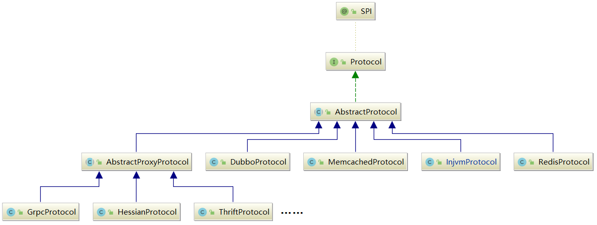
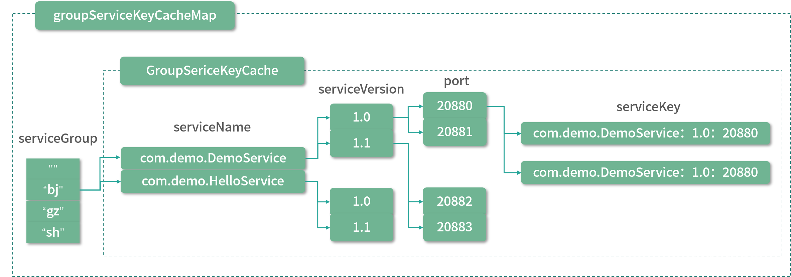
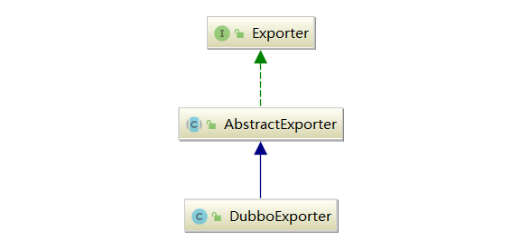
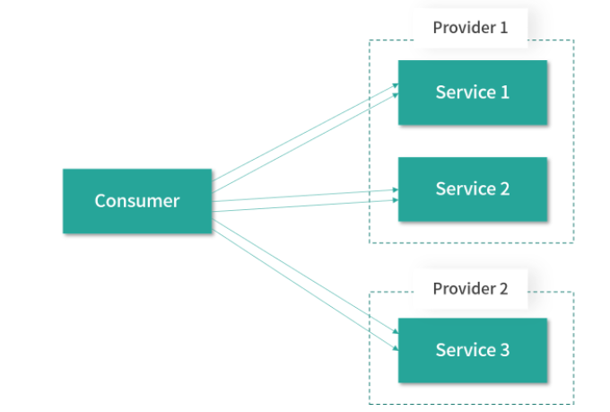

透彻理解Apache Dubbo（十四）——dubbo-rpc模块：Protocol
本章，我将对 Dubbo RPC 层的 Protocol 接口进行详细介绍。Protocol 接口的继承关系见下图：

一、AbstractProtocol
Protocol，顾名思义是对“协议”的抽象，它的核心是export()——暴露服务，以及refer()引用服务这两个方法：
// Protocol.java
@SPI("dubbo")
public interface Protocol {
/**
* 默认端口
*/
int getDefaultPort();
/**
* 将一个Invoker暴露出去，export()方法实现需要是幂等的，即同一个服务暴露多次和暴露一次的效果是相同的
*/
@Adaptive
<T> Exporter<T> export(Invoker<T> invoker) throws RpcException;
/**
* 引用一个Invoker，refer()方法会根据参数返回一个Invoker对象，
* Consumer端可以通过这个Invoker请求Provider端的服务
*/
@Adaptive
<T> Invoker<T> refer(Class<T> type, URL url) throws RpcException;
/**
* 销毁export()方法以及refer()方法使用到的Invoker对象，释放当前Protocol对象底层占用的资源
*/
void destroy();
/**
* 返回当前Protocol底层的全部ProtocolServer
*/
default List<ProtocolServer> getServers() {
return Collections.emptyList();
}
}
1.1 核心字段
AbstractProtocol 提供了一些 Protocol 实现需要的公共能力及公共字段：
// AbstractProtocol.java
public abstract class AbstractProtocol implements Protocol {
// 用于存储暴露的服务集合
// Key是通过ProtocolUtils.serviceKey()方法创建的服务标识
protected final Map<String, Exporter<?>> exporterMap = new ConcurrentHashMap<String, Exporter<?>>();
// 缓存所有ProtocolServer实例
// Key是host和port组成的字符串，Value是监听该地址的ProtocolServer
protected final Map<String, ProtocolServer> serverMap = new ConcurrentHashMap<>();
// 服务引用的集合
protected final Set<Invoker<?>> invokers = new ConcurrentHashSet<Invoker<?>>();
//...
}
上述的exporterMap用于缓存暴露的服务集合，其中的 Key 是服务的唯一标识，通过 ProtocolUtils.serviceKey() 方法创建，结果是一个<服务全限定名>:<服务版本号>:<服务端口>的字符串：
// ProtocolUtils.java
public class ProtocolUtils {
private static final ConcurrentMap<String, GroupServiceKeyCache> groupServiceKeyCacheMap = new ConcurrentHashMap<>();
private ProtocolUtils() {
}
public static String serviceKey(int port, String serviceName, String serviceVersion, String serviceGroup) {
serviceGroup = serviceGroup == null ? "" : serviceGroup;
GroupServiceKeyCache groupServiceKeyCache = groupServiceKeyCacheMap.get(serviceGroup);
if (groupServiceKeyCache == null) {
groupServiceKeyCacheMap.putIfAbsent(serviceGroup, new GroupServiceKeyCache(serviceGroup));
groupServiceKeyCache = groupServiceKeyCacheMap.get(serviceGroup);
}
return groupServiceKeyCache.getServiceKey(serviceName, serviceVersion, port);
}
//...
}
可以看到，ProtocolUtils内部有一个groupServiceKeyCacheMap字段，是一个ConcurrentHashMap：
- Key是
serviceGroup，在实践中我们可以根据需求设置 group，例如，按照机房、地域等进行 group 划分，做到就近调用； - Value是
GroupServiceKeyCache对象，它的内部也包含一个Map——ConcurrentMap<serviceName, ConcurrentMap<serviceVersion, ConcurrentMap<port, String>>>，结构如下图。

1.2 方法实现
AbstractProtocol 没有对 Protocol.export() 方法进行实现，refer() 方法的实现也仅仅是委托给了 protocolBindingRefer() 这个抽象方法，由子类实现：
// AbstractProtocol.java
@Override
public <T> Invoker<T> refer(Class<T> type, URL url) throws RpcException {
return new AsyncToSyncInvoker<>(protocolBindingRefer(type, url));
}
protected abstract <T> Invoker<T> protocolBindingRefer(Class<T> type, URL url) throws RpcException;
AbstractProtocol 唯一实现的方法是 destory() 方法：
- 首先遍历 Invokers 集合，销毁全部的服务引用；
- 然后遍历全部的 exporterMap 集合，销毁发布出去的服务。
// AbstractProtocol.java
protected final Map<String, Exporter<?>> exporterMap = new ConcurrentHashMap<String, Exporter<?>>();
protected final Set<Invoker<?>> invokers = new ConcurrentHashSet<Invoker<?>>();
@Override
public void destroy() {
// 关闭全部的服务引用
for (Invoker<?> invoker : invokers) {
if (invoker != null) {
invokers.remove(invoker);
try {
invoker.destroy();
} catch (Throwable t) {
logger.warn(t.getMessage(), t);
}
}
}
// 关闭暴露出去的服务
for (String key : new ArrayList<String>(exporterMap.keySet())) {
Exporter<?> exporter = exporterMap.remove(key);
if (exporter != null) {
try {
exporter.unexport();
} catch (Throwable t) {
logger.warn(t.getMessage(), t);
}
}
}
}
二、DubboProtocol
了解了 AbstractProtocol 提供的公共能力之后，我们再来分析Dubbo 默认使用的 Protocol 实现类—— DubboProtocol 实现。
2.1 export服务发布
这里我们首先关注 DubboProtocol 的 export() 方法，也就是服务发布的相关实现：
// DubboProtocol.java
@Override
public <T> Exporter<T> export(Invoker<T> invoker) throws RpcException {
// 1.创建ServiceKey
URL url = invoker.getUrl();
String key = serviceKey(url);
// 2.将Invoker对象封装成DubboExporter对象，然后记录到exporterMap集合中
DubboExporter<T> exporter = new DubboExporter<T>(invoker, key, exporterMap);
exporterMap.put(key, exporter);
//...
// 3.启动ProtocolServer
openServer(url);
// 4.进行序列化的优化处理
optimizeSerialization(url);
return exporter;
}
DubboExporter
上述的服务暴露过程中，有一个重要类——DubboExporter，DubboExporter 的继承关系如下图所示：

AbstractExporter 中维护了一个 Invoker 对象，以及一个 unexported 字段（boolean 类型），在 unexport() 方法中会设置 unexported 字段为 true，并调用 Invoker 对象的 destory() 方法进行销毁。
DubboExporter 比较简单，它会维护底层 Invoker 对应的 ServiceKey 以及 DubboProtocol 中的 exportMap 集合，在其 unexport() 方法中除了会调用父类 AbstractExporter 的 unexport() 方法之外，还会清理该 DubboExporter 实例在 exportMap 中相应的元素。
openServer
openServer() 方法会一路调用前面章节介绍的 Exchange 层、Transport 层，并最终创建 NettyServer 来接收客户端的请求：
// DubboProtocol.java
private void openServer(URL url) {
// 获取host:port这个地址
String key = url.getAddress();
// 只有Server端才能启动Server对象
boolean isServer = url.getParameter(IS_SERVER_KEY, true);
if (isServer) {
ProtocolServer server = serverMap.get(key);
// 无ProtocolServer监听该地址
if (server == null) {
synchronized (this) { // DoubleCheck，防止并发问题
server = serverMap.get(key);
if (server == null) {
// 调用createServer()方法创建ProtocolServer对象
serverMap.put(key, createServer(url));
}
}
} else {
// 如果已有ProtocolServer实例，则尝试根据URL信息重置ProtocolServer
server.reset(url);
}
}
}
上述的createServer方法首先会为 URL 添加一些默认值，同时会进行一些参数值的检测，最后通过 Exchangers 门面类创建 ExchangeServer，并封装成 DubboProtocolServer 返回：
// DubboProtocol.java
private ProtocolServer createServer(URL url) {
url = URLBuilder.from(url)
// ReadOnly请求是否阻塞等待
.addParameterIfAbsent(CHANNEL_READONLYEVENT_SENT_KEY, Boolean.TRUE.toString())
// 心跳间隔
.addParameterIfAbsent(HEARTBEAT_KEY, String.valueOf(DEFAULT_HEARTBEAT))
.addParameter(CODEC_KEY, DubboCodec.NAME)
.build();
// 检测SERVER_KEY参数指定的Transporter扩展实现是否合法
String str = url.getParameter(SERVER_KEY, DEFAULT_REMOTING_SERVER);
if (str != null && str.length() > 0 && !ExtensionLoader.getExtensionLoader(Transporter.class).hasExtension(str)) {
throw new RpcException("Unsupported server type: " + str + ", url: " + url);
}
// 通过Exchangers门面类，创建ExchangeServer对象
ExchangeServer server;
try {
server = Exchangers.bind(url, requestHandler);
} catch (RemotingException e) {
throw new RpcException("Fail to start server(url: " + url + ") " + e.getMessage(), e);
}
str = url.getParameter(CLIENT_KEY);
if (str != null && str.length() > 0) {
Set<String> supportedTypes = ExtensionLoader.getExtensionLoader(Transporter.class).getSupportedExtensions();
if (!supportedTypes.contains(str)) {
throw new RpcException("Unsupported client type: " + str);
}
}
// 将ExchangeServer封装成DubboProtocolServer返回
return new DubboProtocolServer(server);
}
序列化
完成 ProtocolServer 的启动之后，export() 方法最后会调用 optimizeSerialization()方法对指定的序列化算法进行优化。在使用某些序列化算法（例如， Kryo、FST 等）时，为了让其能发挥出最佳的性能，最好将那些需要被序列化的类提前注册到 Dubbo 系统中。
例如，我们可以通过一个实现了 SerializationOptimizer 接口的优化器，并在配置中指定该优化器，如下示例代码：
public class SerializationOptimizerImpl implements SerializationOptimizer {
public Collection<Class> getSerializableClasses() {
List<Class> classes = new ArrayList<>();
// 添加需要被序列化的类
classes.add(xxxx.class);
return classes;
}
}
在 DubboProtocol.optimizeSerialization() 方法中，就会获取该优化器中注册的类，通知底层的序列化算法进行优化，序列化的性能将会被大大提升。当然，在进行序列化的时候，难免会级联到很多 Java 内部的类（例如，数组、各种集合类型等），Kryo、FST 等序列化算法已经自动将JDK 中的常用类进行了注册，所以无须重复注册它们。
// DubboProtocol.java
private void optimizeSerialization(URL url) throws RpcException {
// 根据URL中的optimizer参数值，确定SerializationOptimizer接口的实现类
String className = url.getParameter(OPTIMIZER_KEY, "");
if (StringUtils.isEmpty(className) || optimizers.contains(className)) {
return;
}
try {
Class clazz = Thread.currentThread().getContextClassLoader().loadClass(className);
if (!SerializationOptimizer.class.isAssignableFrom(clazz)) {
throw new RpcException("The serialization optimizer " + className + " isn't an instance of " + SerializationOptimizer.class.getName());
}
// 创建SerializationOptimizer实现类的对象
SerializationOptimizer optimizer = (SerializationOptimizer) clazz.newInstance();
if (optimizer.getSerializableClasses() == null) {
return;
}
// 调用getSerializableClasses()方法获取需要注册的类
for (Class c : optimizer.getSerializableClasses()) {
SerializableClassRegistry.registerClass(c);
}
optimizers.add(className);
} catch (ClassNotFoundException e) {
throw new RpcException("Cannot find the serialization optimizer class: " + className, e);
} catch (InstantiationException e) {
throw new RpcException("Cannot instantiate the serialization optimizer class: " + className, e);
} catch (IllegalAccessException e) {
throw new RpcException("Cannot instantiate the serialization optimizer class: " + className, e);
}
}
2.2 refer服务引用
下面，我开始介绍 DubboProtocol 中引用服务的相关实现，具体定义在 protocolBindingRefer() 方法中：
// DubboProtocol.java
@Override
public <T> Invoker<T> protocolBindingRefer(Class<T> serviceType, URL url) throws RpcException {
// 1.进行序列化优化，注册需要优化的类
optimizeSerialization(url);
// 2.创建DubboInvoker对象
DubboInvoker<T> invoker = new DubboInvoker<T>(serviceType, url, getClients(url), invokers);
// 3.将DubboInvoker对象添加到invoker集合之中
invokers.add(invoker);
return invoker;
}
建立连接
关于 DubboInvoker 的具体实现，我先不做深入分析。这里我们需要先关注的是getClients() 方法，它创建了底层发送请求和接收响应的 Client 集合，其核心分为了两个部分，一个是针对共享连接的处理，另一个是针对独享连接的处理，具体实现如下：
// DubboProtocol.java
private ExchangeClient[] getClients(URL url) {
// 是否使用共享连接
boolean useShareConnect = false;
// CONNECTIONS_KEY参数值决定了后续建立连接的数量
int connections = url.getParameter(CONNECTIONS_KEY, 0);
List<ReferenceCountExchangeClient> shareClients = null;
// 如果没有连接数的相关配置，默认使用共享连接的方式
if (connections == 0) {
useShareConnect = true;
// 确定建立共享连接的条数，默认只建立一条共享连接
String shareConnectionsStr = url.getParameter(SHARE_CONNECTIONS_KEY, (String) null);
connections = Integer.parseInt(StringUtils.isBlank(shareConnectionsStr) ? ConfigUtils.getProperty(SHARE_CONNECTIONS_KEY, DEFAULT_SHARE_CONNECTIONS) : shareConnectionsStr);
// 创建公共ExchangeClient集合
shareClients = getSharedClient(url, connections);
}
// 整理要返回的ExchangeClient集合
ExchangeClient[] clients = new ExchangeClient[connections];
for (int i = 0; i < clients.length; i++) {
if (useShareConnect) {
clients[i] = shareClients.get(i);
} else {
// 不使用公共连接的情况下，会创建单独的ExchangeClient实例
clients[i] = initClient(url);
}
}
return clients;
}
当使用独享连接的时候，对每个 Service 建立固定数量的 Client，每个 Client 维护一个底层连接。如下图所示，就是针对每个 Service 都启动了两个独享连接：

当使用共享连接的时候，会区分不同的网络地址（host:port），一个地址只建立固定数量的共享连接。如下图所示，Provider 1 暴露了多个服务，Consumer 引用了 Provider 1 中的多个服务，共享连接是说 Consumer 调用 Provider 1 中的多个服务时，是通过固定数量的共享 TCP 长连接进行数据传输，这样就可以达到减少服务端连接数的目的：

2.3 destroy方法
在 DubboProtocol 销毁的时候，会调用 destroy() 方法释放底层资源，其中就涉及 export 流程中创建的 ProtocolServer 对象以及 refer 流程中创建的 Client。
DubboProtocol.destroy() 方法会逐个关闭 serverMap 集合中的 ProtocolServer 对象：
// DubboProtocol.java
@Override
public void destroy() {
for (String key : new ArrayList<>(serverMap.keySet())) {
ProtocolServer protocolServer = serverMap.remove(key);
if (protocolServer == null) {
continue;
}
RemotingServer server = protocolServer.getRemotingServer();
try {
// 发送ReadOnly请求、阻塞指定时间、关闭底层的定时任务、关闭相关线程池
server.close(ConfigurationUtils.getServerShutdownTimeout());
} catch (Throwable t) {
logger.warn(t.getMessage(), t);
}
}
for (String key : new ArrayList<>(referenceClientMap.keySet())) {
List<ReferenceCountExchangeClient> clients = referenceClientMap.remove(key);
if (CollectionUtils.isEmpty(clients)) {
continue;
}
for (ReferenceCountExchangeClient client : clients) {
closeReferenceCountExchangeClient(client);
}
}
super.destroy();
}
三、总结
本章，我重点介绍了 DubboProtocol 发布和引用 Dubbo 服务的核心流程，DubboProtocol 的源码和设计思路本身比较简单，读者可以自行阅读Dubbo源码深入其细节。